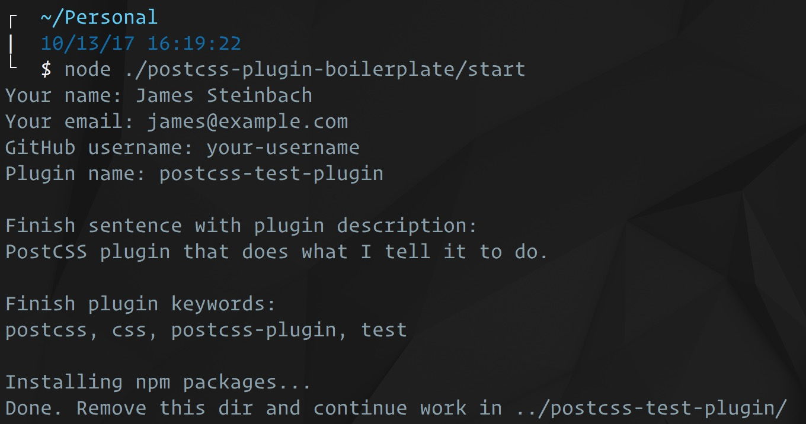

Въведение[1]
PostCSS е разработен от Андрей Ситник, създателят на Autoprefixer. Това е инструмент Node.js, разработен като инструмент за трансформиране на целия ви CSS с помощта на JavaScript, като по този начин се постигат много по-бързи времена за изграждане в сравнение с други процесори.
PostCSS не е препроцесор (въпреки че може да се държи като такъв). Сам по себе си PostCSS не прави нищо. Това е парсер, който токенизира CSS кода, за да създаде абстрактно синтактично дърво. Плъгин може да обработи това дърво и съответно да актуализира свойствата. След като всички плъгини завършат работата си, PostCSS преформатира всичко обратно в низ и извежда в CSS файл.
Налични са около 350 плъгина и повечето изпълняват една единствена задача, като вграждане на @import декларации, опростяване на функциите calc(), обработка на активи на изображения, линтинг на синтаксис, минимизиране и др.

Използването на PostCSS наскоро започна да се увеличава експоненциално, като днес се използва от някои от най-големите бизнеси в технологичната индустрия, като Twitter, JetBrains и Wikipedia. Широкото му приемане и успех до голяма степен се дължат на неговата модулност.
История[2]
По време на проекта Rework идеята за модулна обработка на CSS е предложена от TJ Holowaychuk на 1 септември 2012 г.
28 февруари 2013 г. TJ го изразява публично.
14 март 2013 г., предната работа на Андрей Ситник за Evil Martians довежда до Autoprefixer, базиран на преработване плъгин. Първоначално името на плъгина е rework-vendors.
Тъй като Autoprefixer нараства, Rework вече не може да посреща нуждите си. 7 септември 2013 г. Андрей Ситник започва да разработва PostCSS въз основа на идеите на Rework.
След 3 месеца е пуснат първият PostCSS плъгин, grunt-pixrem.
22 декември 2013 г. Autoprefixer версия 1.0 мигрира към PostCSS. За PostCSS основният фокус на стила е алхимията. Логото на проекта представлява философския камък. Основните и второстепенните версии на PostCSS получават имената си след демоните Ars Goetia. Например, версия 1.0.0 се нарича Marquis Decarabia.
Терминът постпроцесор предизвика известно объркване. Екипът на PostCSS използва термина, за да покаже, че PostCSS не е шаблонен език (препроцесор), а CSS инструмент. Някои разработчици обаче смятат, че терминът постпроцесор би подхождал по-добре на инструментите на браузъра (например -без префикс). Ситуацията стана още по-сложна след пускането на PreCSS. Сега, вместо постпроцесор, екипът на PostCSS използва термина процесор.
Създаване на PostCSS файл[3]
Командата postcss ще стане дълга и тромава, докато използваме допълнителни плъгини и опции. Може да създадем конфигурационен файл на JavaScript, който дефинира всички опции и може логично да определи дали се изпълнява в среда за разработка или производство.
Създаваме конфигурационен файл с име postcss.config.cjs в корена на папката на проекта. Също така трябва да имаме предвид следното:
- Може да поставим файла в друга папка, но ще трябва да посочим --config <dir>.
- Когато изпълняваме postcss може да използваме postcss.config.js като име на файл, но PostCSS може да се провали в Node.js проекти, които имат "тип": "модул", зададен в package.json
- Добавяме следния код към postcss.config.cjs:
// PostCSS configruation
module.exports = (cfg) => {
const devMode = (cfg.env === 'development');
return {
map: devMode ? 'inline' : null,
plugins: [
require('postcss-import')(),
require('autoprefixer')(),
devMode ? null : require('cssnano')()
]
};
};
PostCSS предава cfg обект, който съдържа опциите на командния ред. Например:
{
cwd: '/home/yourname/cssproject',
env: undefined,
options: {
map: { inline: true },
parser: undefined,
syntax: undefined,
stringifier: undefined
},
file: {
dirname: '/home/yourname/cssproject/src',
basename: 'main.css',
extname: '.css'
}
}
Модулът трябва да върне обект с незадължителни свойства:
- map: настройката на изходната карта
- parser: дали да се използва анализатор на синтаксис, различен от CSS (като плъгина scss)
- plugins: масив от плъгини и конфигурации за обработка в посочения ред
Кодът по-горе открива дали командата postcss има опция --env. Това е пряк път за настройка на променливата на средата NODE_ENV. За да компилираме CSS в режим на разработка, стартираме postcss с --env development и, по избор, задаваме --watch --verbose. Това създава вградена карта на източника и не минимизира изхода:
postcss ./src/main.css --output ./styles.css --env development --watch --verbose
За да работим в производствен режим и да компилираме минимизиран CSS без карта на източника, можем да използваме следното:
postcss ./src/main.css --exit ./styles.css
В идеалния случай може да ги стартираме като терминални или npm скриптове, за да намалим допълнително усилието при въвеждане.
Плъгини[4]
PostCSS плъгините изпълняват различни задачи за обработка на CSS, вариращи от анализ и сортиране на свойства до минимизиране. Пълният списък с плъгини може да бъде намерен на postcss.parts, като някои примери са изброени по-долу.
- Autoprefixer за добавяне и изчистване на префикси на браузъра.
- CSS модули за изолиране на CSS селектори и организиране на кода. Доставя се като част от Webpack.
- stylelint за анализиране на CSS кода за грешки и проверка на последователността на стила.
- stylefmt коригира CSS кода според настройките на stylelint.
- PreCSS за изпълнение на някои Sass/Less функции за предварителна обработка.
- postcss-preset-env за емулиране на функции от незавършени чернови на CSS спецификация.
- cssnano, за да направи CSS по-малък по размер, като се отърве от интервалите и пренапише кода.
- RTLCSS за промяна на CSS кода, така че дизайнът да е подходящ за писане отдясно наляво (такова се прилага на арабски и иврит).
- postcss-assets, postcss-inline-svg и postcss-sprites за работа с графики.
Други полезни плъгини са:
В репото PostCSS GitHub има пълен списък на наличните плъгини
Repo GitHub PostCSSНякои от тези включват:
- LostGrid (https://github.com/peterramsing/lost) е PostCSS мрежова система postcss-sassy (https://github.com/andyjansson/postcss-sassy-mixins) предоставя миксини, подобни на Sass
- postcss-nested (https://github.com/postcss/postcss-nested) предоставя възможност за използване на вложени правила на Sass
- postcss-nested-ancestors (https://github.com/toomuchdesign/postcss-nested-ancestors), препратка към всеки селектор на предшественик във вложен CSS
- postcss-simple-vars (https://github.com/postcss/postcss-simple-vars), използвайте подобни на Sass променливи
- PreCSS (https://github.com/jonathantneal/precss) ви предоставя много функции на Sass и това е най-близо до пълната замяна на Sass
Функционалности[5]
PostCSS е рамка за разработване на CSS инструменти. Може да се използва за разработване на шаблонен език като Sass и LESS. Ядрото на PostCSS се състои от:
- CSS анализатор/CSS parser, който генерира абстрактно синтактично дърво
- Набор от класове/Set of classes, който съставлява дървото
- CSS генератор/CSS generator, който генерира CSS ред за дървото на обектите
- Генератор на кодова карта/Code map generator за направените CSS промени
Функциите са достъпни чрез плъгини. Плъгините са малки програми, работещи с дървото на обектите. След като ядрото трансформира CSS низ в дърво на обекти, плъгините анализират и променят дървото. След това PostCSS генерира нов CSS низ за дървото, променено от плъгина.
PostCSS и неговите плъгини са написани на JavaScript и се разпространяват чрез npm, който предлага API за JavaScript операции на ниско ниво.
Има официални инструменти, които правят възможно използването на PostCSS със системи за изграждане като Webpack, Gulp и Grunt. Наличен е и конзолен интерфейс. Browserify или Webpack могат да се използват за отваряне на PostCSS в браузър.
Можем да конфигурираме нашия списък с браузъри във файла package.json с помощта на ключ „browserslist“:
"browserslist": [
"defaults"
]
Заявката по подразбиране по-горе е кратка версия на:
- > 0,5% браузъри, които имат поне 0,5% глобално използване.
- no dead browsers, които са получили официална поддръжка или актуализации през последните 24 месеца.
- последните 2 версии за всеки браузър, Firefox ESR най-новата версия за разширена поддръжка на Firefox
Или можем да използваме файл .browserslistrc в главната директория и вътре да въвеждаме нашите конфигурации.
PostCSS позволява промяна на анализатора и генератора. В този случай PostCSS може да се използва за работа с източниците Less и SCSS. Въпреки това PostCSS сам по себе си не може да компилира Sass или Less в CSS. Това, което прави, е да променя оригиналните файлове - например чрез сортиране на свойствата на CSS или проверка на кода за грешки. PostCSS поддържа SugarSS.
Как да настроим PostCSS[6]
За да започнем да използваме PostCSS, първо трябва да го инсталираме и неговия интерфейс на командния ред (CLI) глобално, като използваме тази команда:
npm i -g postcss-cli
- -g, за да го изтеглите глобално
След това инсталирайте PostCSS локално, като използвате следната команда:
npm i -D postcss
- -D е съкращение от --save-dev за запазване на инсталираните пакети като dev dependencies
За да започнем да използваме PostCSS, трябва да имаме изтеглен поне един плъгин.
Настройване на PostCSS с помощта на PostCSS CLI[6.1]
Общият синтаксис за командата, която трябва да се изпълни в терминала, е:
postcss [input.css] [OPTIONS] [-o|--output output.css] [--watch|-w]
postcss <input.css> [OPTIONS] --dir <output-directory> [--watch|-w]
Можем да изпълним следната команда директно в терминала:
postcss src/style.css --use postcss-import --dir public --watch
Опцията --use изброява добавките, които използваме. Опцията --watch следи файловете за промени и ги прекомпилира.
Настройване на PostCSS чрез NPM скриптове във файла package.json[6.2]
Във файла package.json в „скриптовете“ трябва да напишем следното:
"postcss:watch": "postcss src/style.css --use postcss-import --dir public --watch"
Горната команда ще създаде нова директория, наречена „public“, която съдържа нашия окончателен Vanilla CSS файл, който има същото име като изходния файл (style.css).
Ако искаме изходният файл да има различно име от името на изходния файл, трябва да заменим
--dir public с -o public/<file-name>.
Като например: -o public/main.css.
Можем да конфигурираме нашата команда да се изпълнява в PostCSS CLI с различни опции, за да получим желания резултат.
Сега, за да изпълним горната команда, въвеждаме npm run <command name> в нашия терминал. (нашето <име на команда> е postcss:watch, можете да изберете произволно име).
Тъй като нашият проект става по-голям, е по-вероятно да добавим още плъгини. За всеки използван плъгин трябва да запишем името му след ключовата дума --use в командата по-горе, което го прави невероятно дълго и не е добра практика.
Алтернативното решение е да създадем файл postcss.config.js.
Настройване на PostCSS, като настроите конфигурационен файл на PostCSS[6.3]
В основната директория на проект създайте файл и го наименувайте postcss.config.js. Кодът вътре в него ще изглежда така:
module.exports = {
plugins: [
require('postcss-import'),
require('postcss-mixins'),
require("stylelint"),
require('postcss-preset-env')({ stage: 1 }),
require('cssnano'),
],
}
Вътре в масива с плъгини добавяме нашите плъгини. Забележка: Много е важно да добавите приставката postcss-import в горната част на нашия списък, тъй като се изисква от документацията. Командата, която изпълнява PostCSS в нашия файл package.json, трябва да бъде променена на:
"postcss:watch": "postcss src/style.css --dir public --watch"
Както можете да видите, единствената необходима промяна е да премахнете опцията --use, тъй като списъкът с нашите добавки, споменат сега, е отделен файл.
Настройване на PostCSS с помощта на Task Runners (или Module Bundlers)[6.4]
PostCSS може да бъде настроен да работи с различни програми за изпълнение на задачи като Gulp, Grunt и пакети за модули като Rollup и Webpack.
Първо, трябва да инсталираме grunt локално в зависимостите „dev“:
npm i -D grunt
И след това инсталирайте grunt-cli глобално:
npm install -g grunt-cli
Сега трябва да създадем файл в корена на нашия проект и да го наименуваме Gruntfile.js. След това трябва да инсталираме конкретен плъгин @lodder/grunt-postcss, който да ни позволи да изпълняваме PostCSS с помощта на Grunt чрез следната команда:
npm i -D @lodder/grunt-postcss
Във функцията initCnfig настройваме нашата PostCSS конфигурация.
module.exports = function(grunt) {
grunt.initConfig({
postcss: {
options: {
processors: [
require('postcss-import')(),
require('postcss-mixins'),
require("stylelint"),
require('postcss-preset-env')({ stage: 1 }),
require('cssnano')(),
]
},
dist: {
src: 'src/style.css',
dest: 'public/style.css'
}
}
})
grunt.loadNpmTasks('@lodder/grunt-postcss');
}
- Тук ще се придържаме към основния минимум за стартиране на PostCSS, който е:
- Извикване на нашите плъгини в процесорния масив.
- Настройване на изходния файл и целевия файл в обекта dist.
За да завършим нашата конфигурация, трябва да заредим нашия плъгин с помощта на метода grunt.loadNpmTasks. Накрая, за да изпълним нашата Grunt задача, въвеждаме:
grunt postcss
PostCSS vs Sass[7]
Основното предимство, което PostCSS предоставя пред CSS препроцесорите като Sass или Less, е възможността да избираме свой собствен път и да изберем функциите, от които се нуждаем, като същевременно добавяме нови възможности. Sass или Less са „фиксирани“, получаваме много функции, които може или не може да използваме, и не позволяват разширение.
Защо да използваме PostCSS?[8]
Може вече да използвате Sass или Less, за да добавите логика към вашия CSS работен процес: променливи, оператори if/else, функции и mixins. Има обаче някои ограничения за тези препроцесори.
Какво става, ако трябва да добавите едно или две CSS свойства въз основа на наличието на други CSS свойства?
Искаме това приятно естествено усещане за еластично/инерционно превъртане, когато имаме елемент с overflow: scroll (или overflow-x / overflow-y). Навсякъде, където направим елемент с възможност за превъртане, ще трябва да добавим -webkit-overflow-scrolling: touch.
Препроцесорите нямат начин да открият какви свойства има в даден селекторен блок, така че ще ни трябва многословно миксин решение. Освен това не използваме препроцесор за всеки проект, така че се нуждаехме от PostCSS решение.
За сравнение, ето как можем да приложим Sass mixin за това поведение на превъртане:
@mixin overflow-scroll($direction: false) {
$property: if($direction, 'overflow-#{$direction}', 'overflow');
#{$property}: overflow;
-webkit-overflow-scrolling: touch;
}
Mixin, който се използва на Sassmeister.
Този подход работи, но има някои съществени недостатъци. Първо, вие вече не пишете специфичен CSS: пишете по-подробна абстракция. Всеки разработчик, който дойде до тази кодова база, трябва да научи друга абстракция. Второ, това не е добре автоматизирано. Ако забравите да използвате mixin, не получавате допълнителното свойство.
PostCSS, от друга страна, автоматизира това напълно, без да е необходима писмена абстракция. Плъгинът PostCSS може да намери всеки селекторен блок с препълване с превъртане и автоматично да вмъкне допълнителното свойство.
Как да напишем PostCSS Plugin?[9]
Клонирайте Boilerplate Repo на приставката PostCSS
- Отидете до вашия терминал и клонирайте Boilerplate repo на приставката PostCSS
$ git clone git@github.com:postcss/postcss-plugin-boilerplate.git
- След това стартирайте скрипта на съветника от това репо:
$ node ./postcss-plugin-boilerplate/start
Този скрипт ще ви зададе няколко въпроса във вашия терминал. Той ще изтегли вашето име и имейл адрес от вашия локален git профил (ако сте го настроили) и след това ще ви попита за вашето потребителско име в Github. След това ще изберете името на вашия плъгин. Ще започне с postcss- и ще завършите името. След това съветникът ще ви помоли да завършите изречение, описващо какво ще прави вашият плъгин. Накрая ще започне разделен със запетая списък с тагове, които да попълните.
След като завършите тази настройка, ще имате шаблонна директория: съветникът я създаде със същото име, което сте избрали за вашия плъгин, докато отговаряте на въпросите на скрипта. Нека се насочим към тази директория:
$ cd postcss-test-plugin
В него ще намерите някои познати компоненти на проект, базиран на възли: index.js, package.json, директория node_modules.
Ще поставите вашата логика в index.js: функциите, които манипулират CSS. Ако имате някакви други зависимости на модул на възел за вашия плъгин, package.json ще ги управлява и ще ги инсталира в node_modules.
Нека започнем с разглеждане на шаблонния код, предоставен в index.js:
var postcss = require('postcss');
Първото нещо, което прави, е да вземе необходимата предпоставка: самата PostCSS библиотека. Кодът, който следва, разчита на достъп до PostCSS.
module.exports = postcss.plugin('postcss-test-plugin', function (opts) {
opts = opts || {};
// Work with options here
return function (root, result) {
// Transform CSS AST here
};
});
Този блок от код е частта, която всъщност съдържа инструкции за манипулиране на вашия CSS. Първото нещо, което ще трябва да направим, е да преминем през всички декларационни блокове в листа със стилове. Основният параметър във функцията за връщане има метод за това: .walkRules().
Преминаване през всеки селекторен блок[9.1]
Ще надстроим шаблона с .walkRules(), за да преминем през всеки декларационен блок и да ни позволи достъп до стиловете в него:
root.walkRules(function(rule) {
// We'll put more code here in a moment…
});
Сега, когато преминаваме през всеки селекторен блок, трябва да видим дали съдържа свойство за преливане. За достъп до тези свойства ще използваме метода .walkDecls(), който е част от правилото, предадено на функцията по-горе.
Преминаване през всяко свойство[9.2]
rule.walkDecls(function(decl) {
// We work with each `decl` object here.
});
Вътре в този цикъл, decl е обект, представляващ декларация за стил. Той съдържа данни за двойката свойство-стойност, както и някои методи за нейното манипулиране. Двете най-важни неща за нашия случай са decl.prop (името на свойството) и decl.value (стойността на свойството).
Намиране на свойства на препълване[9.3]
За да открием дали decl е свързано с препълване, можем да поставим оператор if в този цикъл:
if (decl.prop.indexOf('overflow') === 0),
но има по-ефективен начин да направите това. PostCSS ни позволява да филтрираме специфични свойства в метода .walkDecls(). Можете да намерите това в документацията за API на PostCSS. Нямаме нужда от този if оператор, ако филтрираме свойството за препълване по следния начин:
rule.walkDecls('overflow', function(decl) {
// We work with the `decl` object here.
});
Това обаче не е съвсем правилно. Ще намери само свойството за преливане. Ако искаме да отчетем и overflow-x и overflow-y (а ние го правим), трябва малко да коригираме този филтър. Този проп параметър не приема масив от имена на свойства. За да съпоставим няколко свойства, ще трябва да използваме част от RegEx: /^overflow-?/.
Ето кратко обяснение за този синтаксис:
- ^ означава, че името на свойството трябва да започва с препълване;
- -? означава „може или не може да има - след думата препълване.
Забележете, че не използваме '' около регулярния израз. Това ни води до:
rule.walkDecls(/^overflow-?/, function(decl) {
// We work with the `decl` object here.
});
Предотвратяване на дублиращи се свойства[9.4]
Този код ще премине през всички блокове селектори в нашата таблица със стилове, след което ще премине през всички свойства, свързани с препълване в тези селектори. Всичко, което остава да направите, е да вмъкнете нашето property. Следващият блок от код ще провери дали стойността на свойството, свързано с препълването, е превъртане и ако е така, добавете свойството.
if (decl.value === 'scroll') {
rule.append({
prop: '-webkit-overflow-scrolling',
value: 'touch'
});
}
В този случай прибягваме до оператор if. Цикълът, който написахме преди малко, филтрира свойствата, така че тази функция работи само върху обекти decl, където свойството започва с overflow-?.
Сега, ако decl.value е превъртане, ще добавим двойка свойство-стойност към родителския обект на правило.
Възможно е някой вече да е включил свойството -webkit-overflow-scrolling. Не искаме да го дублираме. PostCSS има функция, която ни позволява да проверим дали дадено свойство вече е в блок за избор:
var hasTouch = rule.some(function(i) {
return i.prop === '-webkit-overflow-scrolling';
});
if (!hasTouch) {
rule.append({
prop: '-webkit-overflow-scrolling',
value: 'touch'
});
} Сега имаме по-добра функция: ако разработчик умишлено е поставил -webkit-overflow-scrolling където е необходимо, ние няма да го дублираме.
Инсталиране на първия ви PostCSS плъгин[10]
Ще ви е необходим поне един плъгин, за да направите нещо практично. Плъгинът за импортиране на PostCSS е добра опция, която вгражда всички @import декларации и обединява вашия CSS в един файл. Инсталирайте го глобално така:
npm install -g postcss-import
За да тествате този плъгин, отворете или създайте нова папка на проекта, като например cssproject, след което създайте подпапка src за вашите изходни файлове. Създайте файл main.css, за да заредите всички части:
/* src/main.css */
@import '_reset';
@import '_elements';
След това създайте файл _reset.css в същата папка:
/* src/reset.css */
* {
padding: 0;
margin: 0;
} Следвайте това с файл _elements.css:
/* src/elements.css */
body {
font-family: sans-serif;
}
label {
user-select: none;
} Стартирайте PostCSS от главната папка на проекта, като подадете входния CSS файл, списък с плъгини към --use и име на --output файл:
postcss ./src/main.css --use postcss-import --output ./styles.css
Ако нямате никакви грешки, следният код ще бъде изведен в нов файл styles.css в корена на проекта:
/* src/main.css */
/* src/reset.css */
* {
padding: 0;
margin: 0;
}
/* src/elements.css */
body {
font-family: sans-serif;
}
label {
user-select: none;
}
/* sourceMappingURL=data:application/json;base64,...
Заключение[11]
PostCSS съществува от 2015 г. и е много популярен сред CSS препроцесорите. Можете да го използвате като самостоятелен инструмент или във връзка с други съществуващи препроцесори. Кога го използвате и как (самостоятелно или в комбинация) зависи от нуждите на вашия проект.
Използвани източници
[1] Въведение:
https://www.toptal.com/front-end/postcss-sass-new-play-date, последно посетен на 2023-05-15
https://www.sitepoint.com/an-introduction-to-postcss/, последно посетен на 2023-04-01
[2] История:
https://en.wikipedia.org/wiki/PostCSS, последно посетен на 2023-04-15
[3] Създаване на PostCSS файл:
https://en.wikipedia.org/wiki/PostCSS, последно посетен на 2023-04-15
[4] Плъгини:
https://en.wikipedia.org/wiki/PostCSS, последно посетен на 2023-04-15
https://jacekjeznach.com/what-is-postcss-and-should-i-use-it/, последно посетен на 2023-04-15
[5] Функционалности:
https://en.wikipedia.org/wiki/PostCSS, последно посетен на 2023-04-15
https://www.freecodecamp.org/news/what-is-postcss/, последно посетен на 2023-04-15
[6] Как да настроим PostCSS:
https://www.freecodecamp.org/news/what-is-postcss/, последно посетен на 2023-04-15
[6.1] Настройване на PostCSS с помощта на PostCSS CLI
https://www.freecodecamp.org/news/what-is-postcss/, последно посетен на 2023-04-15
[6.2] Настройване на PostCSS чрез NPM скриптове във файла package.json
https://www.freecodecamp.org/news/what-is-postcss/, последно посетен на 2023-04-15
[6.3] Настройване на PostCSS, като настроите конфигурационен файл на PostCSS
https://www.freecodecamp.org/news/what-is-postcss/, последно посетен на 2023-04-15
[6.4] Настройване на PostCSS с помощта на Task Runners (или Module Bundlers)
https://www.freecodecamp.org/news/what-is-postcss/, последно посетен на 2023-04-15
[7] PostCSS vs Sass:
https://jacekjeznach.com/what-is-postcss-and-should-i-use-it/, последно посетен на 2023-04-15
[8] Защо да използваме PostCSS?
https://dockyard.com/blog/2018/02/01/writing-your-first-postcss-plugin, последно посетен на 2023-04-15
[9] Как да напишем PostCSS Plugin?
https://dockyard.com/blog/2018/02/01/writing-your-first-postcss-plugin, последно посетен на 2023-04-15
[9.1] Преминаване през всеки селекторен блок
https://dockyard.com/blog/2018/02/01/writing-your-first-postcss-plugin, последно посетен на 2023-04-15
[9.2] Преминаване през всяко свойство
https://dockyard.com/blog/2018/02/01/writing-your-first-postcss-plugin, последно посетен на 2023-04-15
[9.3] Намиране на свойства на препълване
https://dockyard.com/blog/2018/02/01/writing-your-first-postcss-plugin, последно посетен на 2023-04-15
[9.4] Предотвратяване на дублиращи се свойства
https://dockyard.com/blog/2018/02/01/writing-your-first-postcss-plugin, последно посетен на 2023-04-15
[10] Инсталиране на първия ви PostCSS плъгин:
https://www.sitepoint.com/an-introduction-to-postcss/, последно посетен на 2023-04-01
[11] Заключение:
https://www.freecodecamp.org/news/what-is-postcss/, последно посетен на 2023-04-15
Списък с фигури
[1] Фигура 1. https://www.toptal.com/front-end/postcss-sass-new-play-date, последно посетен на 2023-05-15